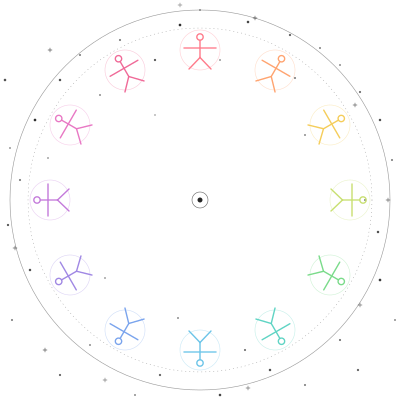

4 direções para o logo da EsoYou
Cada bloco mostra uma personalidade visual diferente, em 4 tamanhos (32 px favicon → 200 px destaque) e numa simulação da tela de login. Compare como cada uma "sustenta" no pequeno e no grande.
3 caminhos de lockup (figura + EsoYou)
Como a figura conversa com o nome. Cada layout tem sua personalidade: os stacked são versões clássicas (mais flexíveis, usadas no login, header, favicon separadamente); o Y-replacement é a integração mais ousada (a figura SUBSTITUI a letra Y).
Caminho 1 · stacked clássico
Mais flexível. Funciona em qualquer contexto. Figura vive sozinha como ícone (favicon, app), wordmark vive sozinho em headers.
Caminho 2 · figura entre Eso e You
A figura como ponte entre "Eso" (esotérico, cósmico) e "You" (você, individual). Ela é literalmente o que conecta o universal ao pessoal. Lê-se "EsoYou" naturalmente, com a figura no centro como respiração visual. (Em tamanho pequeno, voltamos pro stacked.)
Caminho 3 · cabeça é o “o” de Eso (sua ideia original)
A figura inteira ocupa o lugar do "o" em "Eso". Funciona, mas a figura fica grande relativa ao texto, dominando a leitura. Os braços pra cima atrapalham mais aqui (porque o "o" não tem nada acima dele).
Minha aposta: Caminho 1 (stacked) para uso geral + Caminho 2 (Y) como assinatura especial em momentos hero.
Estrela-Pessoa Híbrida
Combinação do melhor das duas ideias. Da figura do Gemini: braços para cima-e-pra-fora (em vez de horizontais), criando uma silhueta de estrela de 4 pontas mais "starburst", e uma estrelinha-coração no peito (detalhe simbólico de núcleo). Da nossa: cabeça redonda sem rosto (continua legível no tamanho favicon), geometria limpa e simétrica, e camadas concêntricas precisas.
Estrela-Pessoa Neon
Cabeça arredondada + corpo em forma de estrela de 5 pontas (braços e pernas como 4 das pontas, e a 5ª apontando pra baixo). Traçado com 5 camadas concêntricas em cores neon — magenta, laranja, amarelo, roxo, ciano — criando um efeito de aura pulsante. A cor mais externa é a mais quente, vai esfriando até o ciano no centro. Conecta com sua visão de avatar único e tem muito mais presença visual.
Constelação-Pessoa
Uma figura humana formada por estrelas conectadas, como uma constelação no céu. Cabeça, ombros, mãos, quadris, pés — pontos brilhantes ligados por linhas finas de prata. Conexão direta com a noite estrelada e com o conceito de "avatar único" (cada pessoa é uma constelação só dela). Mantém legibilidade em qualquer tamanho.
Vitruviano Solene
Uma figura grande, central, marcante — Vitruviano "de verdade" (4 braços, 4 pernas, círculo + quadrado), com traço grosso. 12 pontos discretos no anel externo representam as modalidades. Forma renascentista clássica, presença forte, ainda 100% conectada ao conceito original.
Mandala Sagrada (com olho)
Pura geometria — estrela de 12 pontas (dodecagrama) sobreposta em duas camadas, com um olho central (vesica piscis + pupila) — referência clássica ao "olho que tudo vê" das tradições esotéricas. Sem figuras humanas, mais abstrato e místico. Excelente em qualquer tamanho.
Lua Crescente com Estrela
Símbolo cheio de presença — uma forma sólida prata em vez de traços finos. Lua crescente abraçando uma estrela. Visual mais "marca de produto" que pode estampar t-shirts, papelaria, etc. Funciona perfeito como favicon. Pode vir acompanhado do wordmark "EsoYou" em fonte serifada.
12 Vitruvianos coloridos (atual)
Para comparação — o logo que está no site agora. Reparou como ele "some" no tamanho de 96 px lá no card?

32 pxOlha as quatro opções com calma. Me conta qual te chama mais atenção, ou se quer combinar elementos de duas (ex: "gostei do olho da C com a tipografia da D"). Posso ajustar qualquer detalhe — espessura, brilho, tamanho, cor.